Amanhecer Poético
Página 1 do material de apresentação do acervo literário.
Livros, autores e histórias que guardam a memória de Delfim Moreira. Escolha uma obra e conheça sua apresentação.
Explorar a bibliotecaAbra uma apresentação para ler seus textos e ver as imagens. Use a ampliação para explorar os detalhes.
16 apresentações
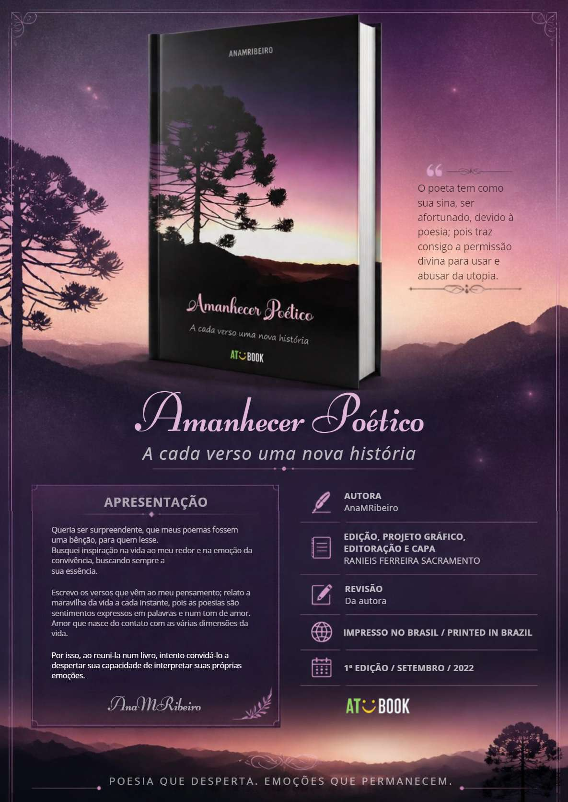
A cada verso uma nova história · AnaMRibeiro
Ler apresentação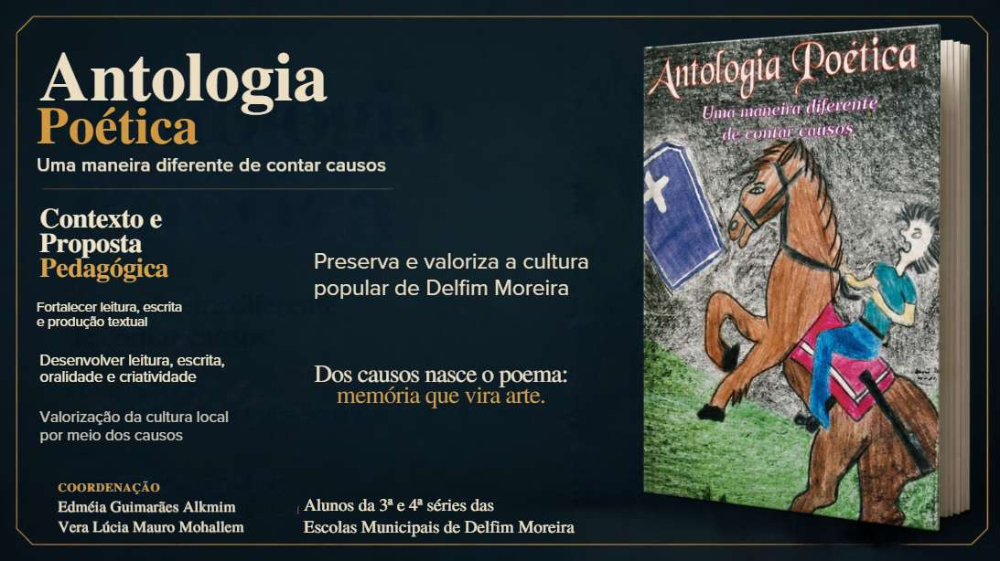
Uma maneira diferente de contar causos
Ler apresentação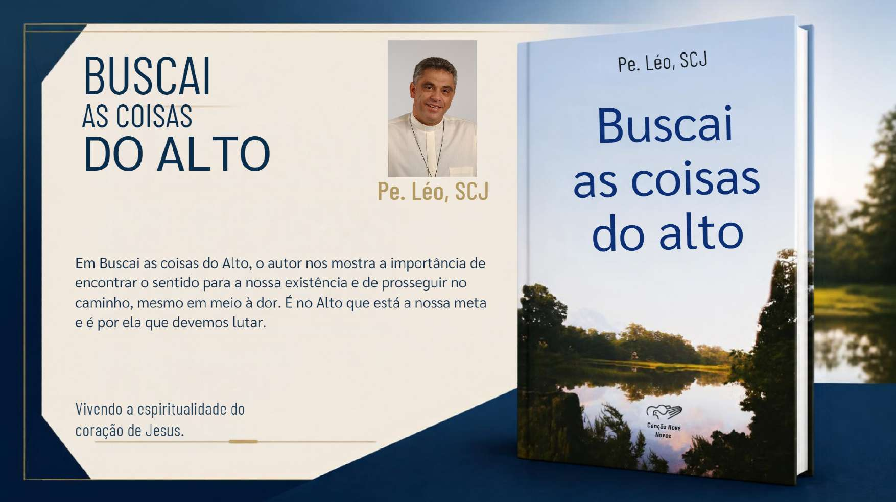
Vivendo a espiritualidade do coração de Jesus · Pe. Léo, SCJ
Ler apresentação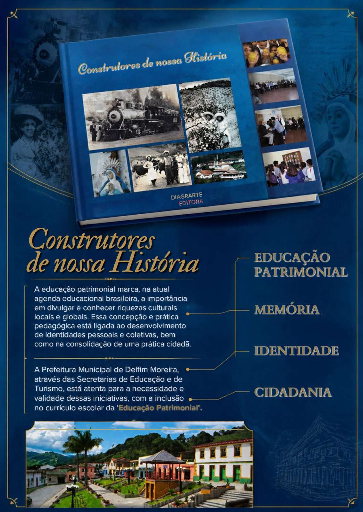
Educação patrimonial, memória, identidade e cidadania
Ler apresentaçãoAchegas à sua formação histórica · Guido Gilberto do Nascimento
Ler apresentaçãoNossa gente, nossa cultura, nosso patrimônio
Ler apresentação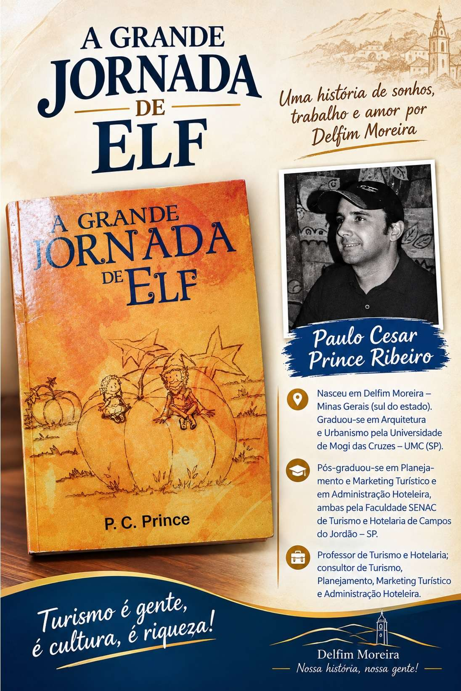
Paulo Cesar Prince Ribeiro
Ler apresentação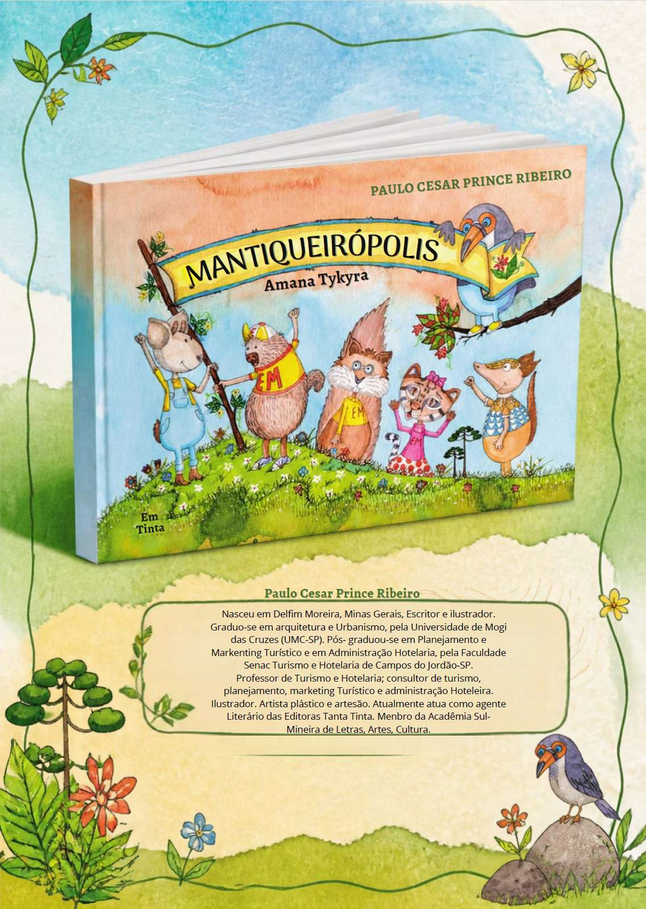
Amana Tykyra · Paulo Cesar Prince Ribeiro
Ler apresentação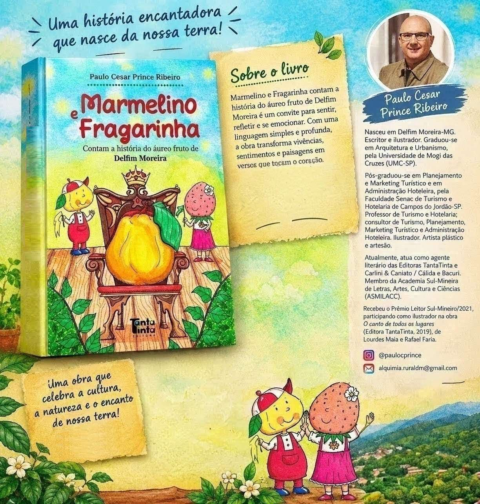
Contam a história do áureo fruto de Delfim Moreira · Paulo Cesar Prince Ribeiro
Ler apresentação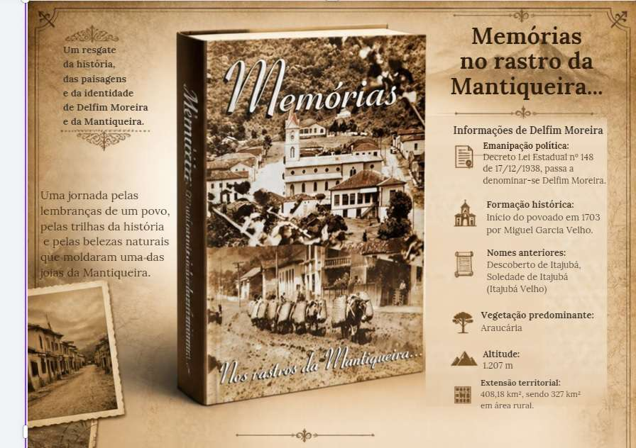
Nos rastros da Mantiqueira...
Ler apresentação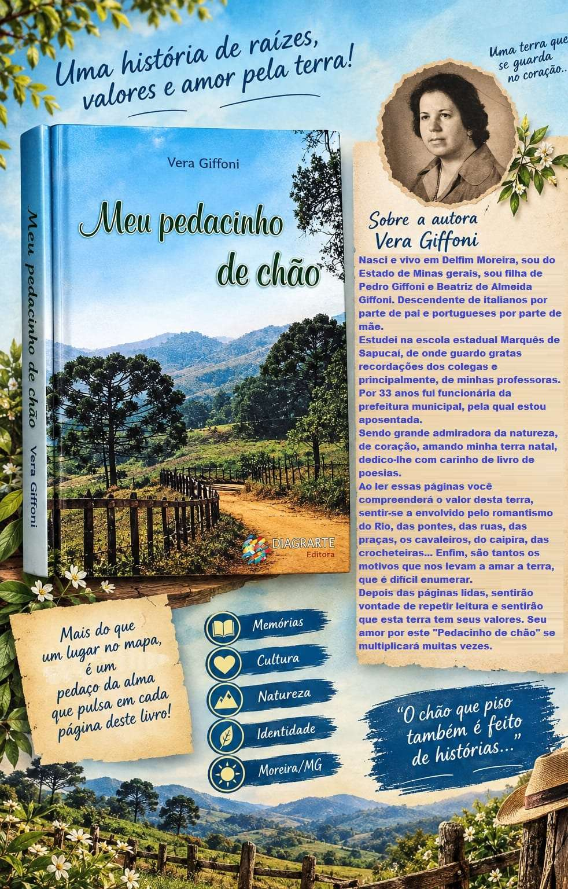
Vera Giffoni
Ler apresentação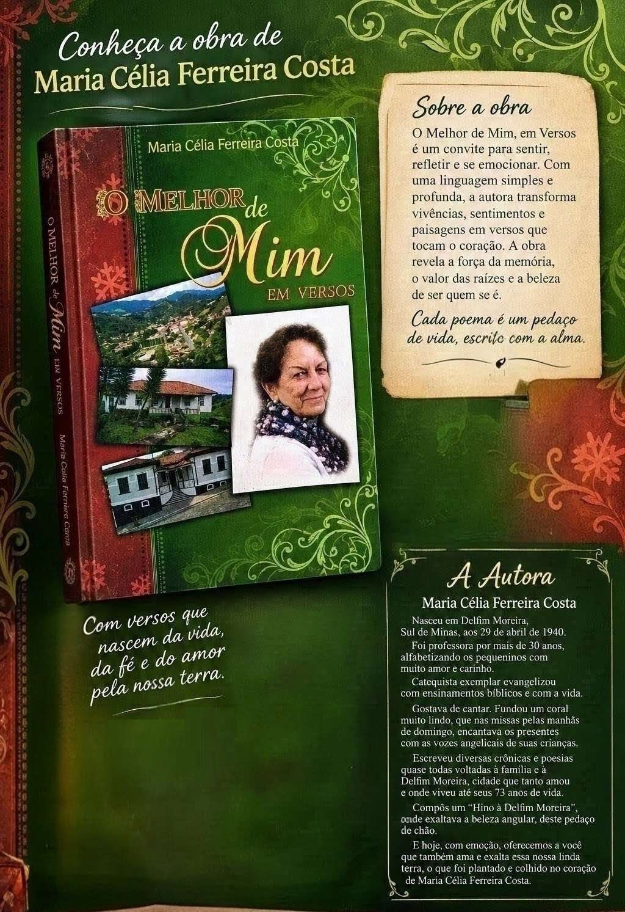
Maria Célia Ferreira Costa
Ler apresentação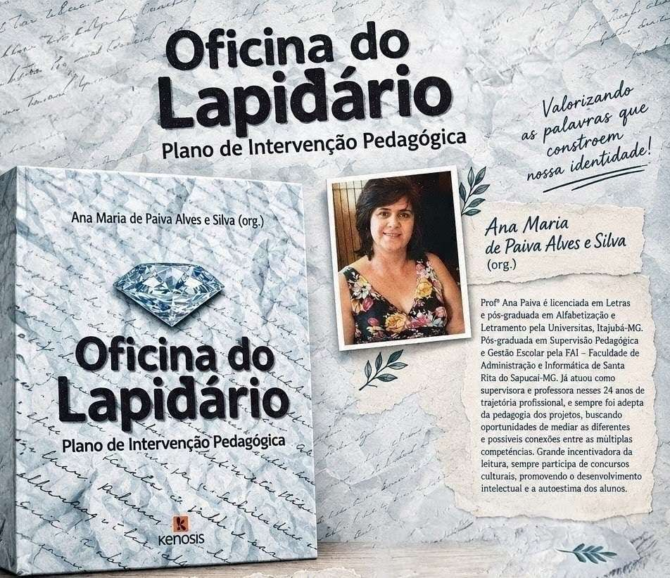
Plano de Intervenção Pedagógica · Ana Maria de Paiva Alves e Silva (org.)
Ler apresentação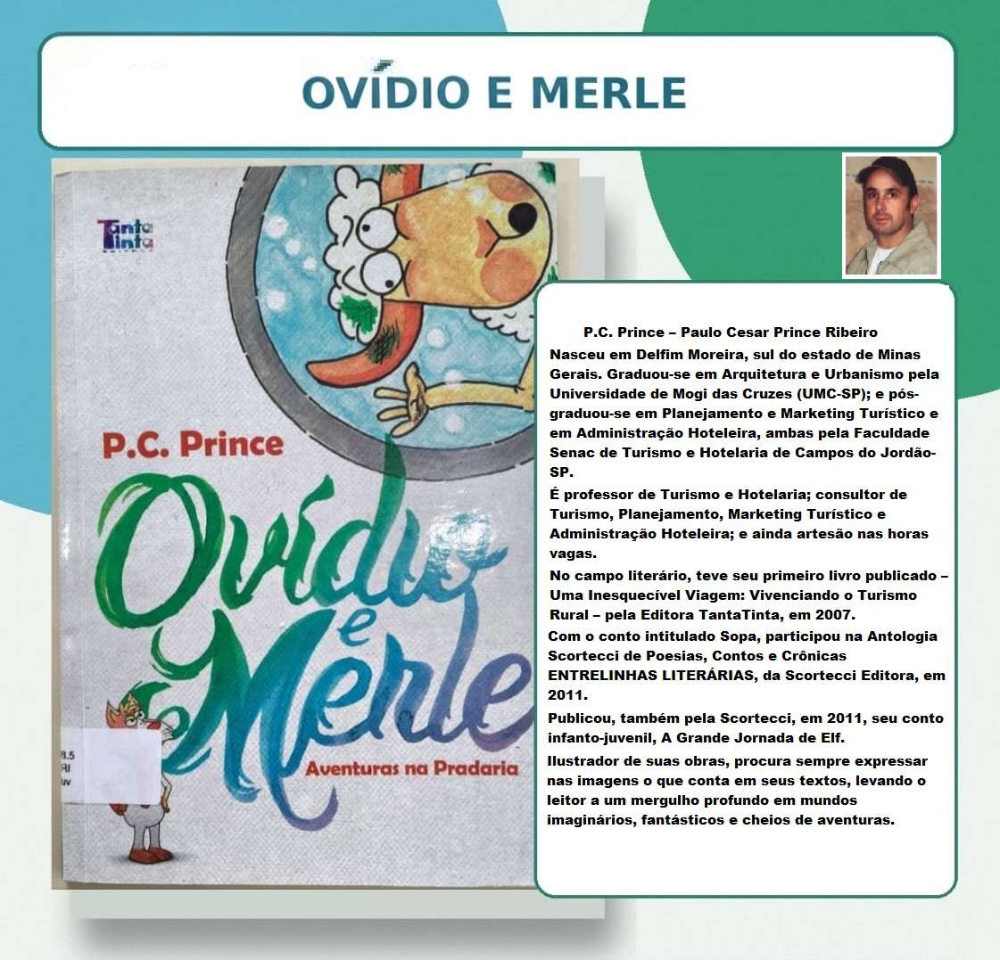
Aventuras na Pradaria · Paulo Cesar Prince Ribeiro
Ler apresentação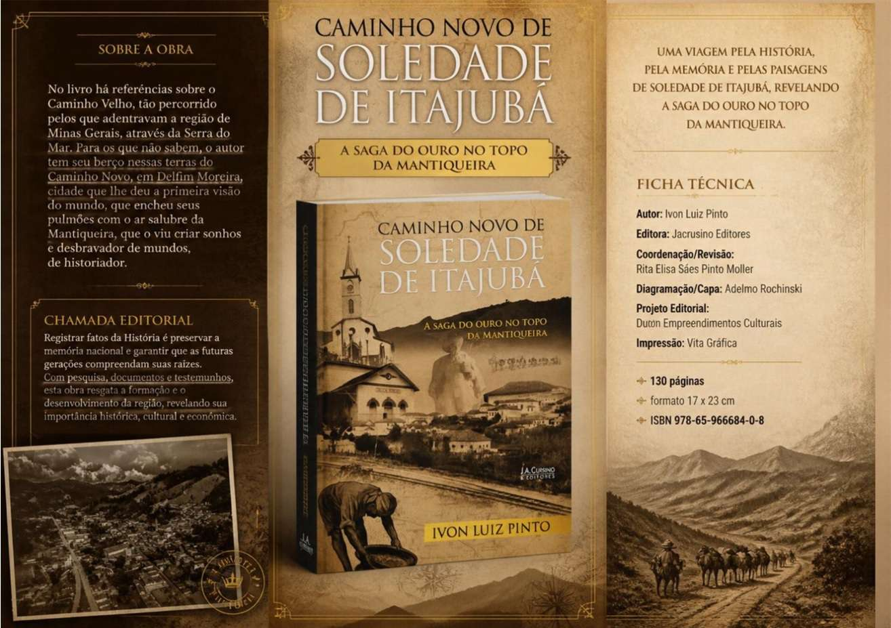
A saga do ouro no topo da Mantiqueira · Ivon Luiz Pinto
Ler apresentação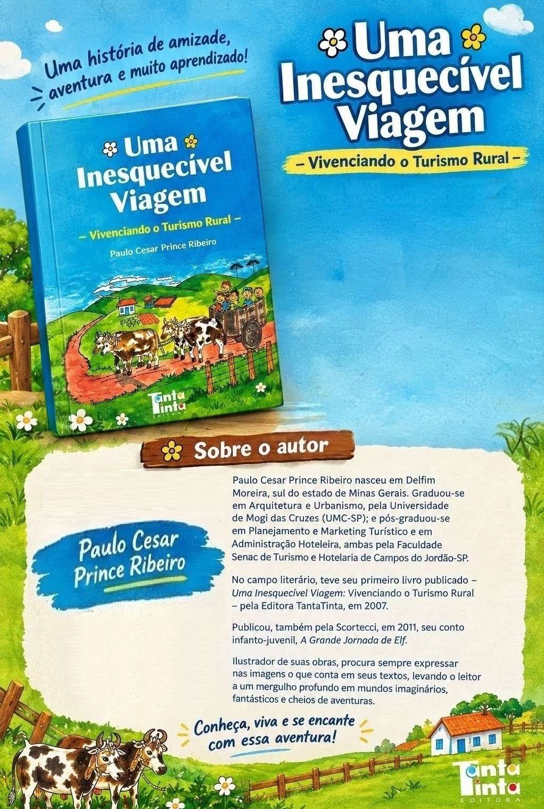
Vivenciando o Turismo Rural · Paulo Cesar Prince Ribeiro
Ler apresentaçãoNenhuma apresentação encontrada. Tente outro título ou nome.
Use + para ampliar. Arraste ou role a página para percorrer a apresentação.
Página 1 do material de apresentação do acervo literário.
Página 2 do material de apresentação do acervo literário.
Página 3 do material de apresentação do acervo literário.
Página 4 do material de apresentação do acervo literário.
Página 5 do material de apresentação do acervo literário.
Página 6 do material de apresentação do acervo literário.
Página 7 do material de apresentação do acervo literário.
Página 8 do material de apresentação do acervo literário.
Página 9 do material de apresentação do acervo literário.
Página 10 do material de apresentação do acervo literário.
Página 11 do material de apresentação do acervo literário.
Página 12 do material de apresentação do acervo literário.
Página 13 do material de apresentação do acervo literário.
Página 14 do material de apresentação do acervo literário.
Página 15 do material de apresentação do acervo literário.
Página 16 do material de apresentação do acervo literário.
Apresentações reproduzidas do material enviado ao acervo. Textos, fotografias e elementos gráficos mantidos como no original.